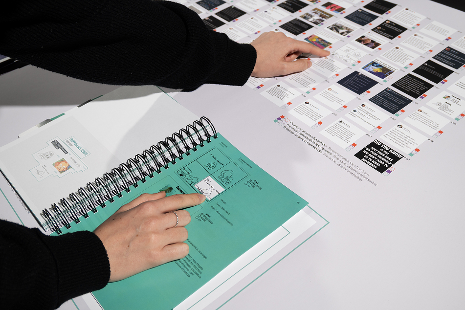
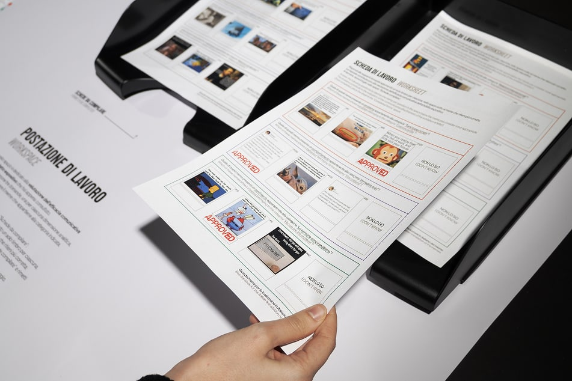
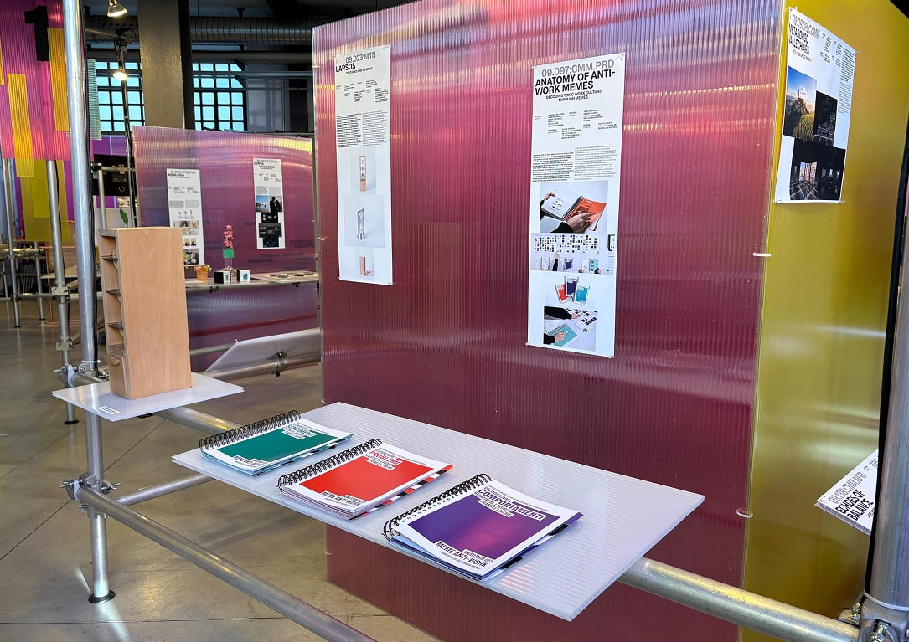
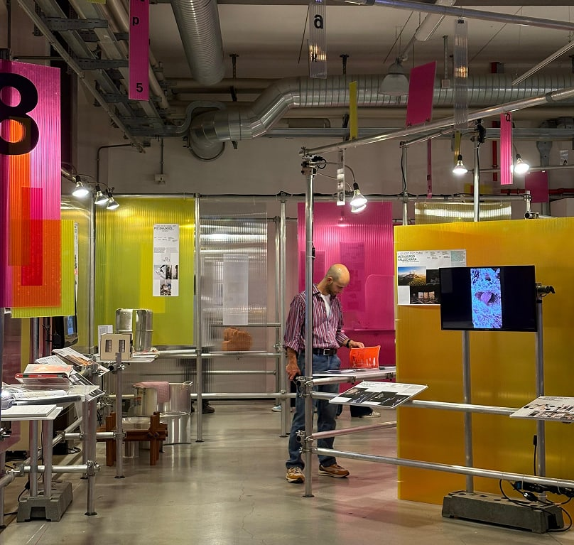

Anti-work memes are a form of digital satire that challenges traditional work culture, exposing exploitation, job insecurity, and the myth of productivity at all costs. Through platforms like Instagram, Reddit, and TikTok, these images become tools of cultural resistance,
transforming individual discontent into a collective conversation about labor rights.
“Anatomy of Anti-Work Memes” analyzes 167 memes posted by the Instagram account
@antiworkmemes between 2020 and 2025, selected based on high engagement.
The project examines the issues, behaviors, and sentiments that these memes express in relation to work, and organizes them into categories that reveal multiple levels of meaning
(social, economic, and emotional) hidden behind the apparent simplicity of the satirical image.
This takes the form of two interactive elements: a grid and three catalogs, which allow visitors to isolate and compare visual and textual elements of the memes. Visitors are then invited to fill out a
questionnaire on the categories of issues, behaviors, and emotions present in the memes.


The “Anatomy of Anti-Work Memes” project participated in several calls for proposals, earning a spot in various exhibitions, such as the “Interdependence” exhibition, which was first held during the 2026
Design School Open House and then during Design Week 2026 at the Fabbrica del Vapore.

